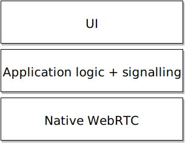

class: center, middle .center[<img src="slack_rgb.png" alt="Slack logo" style="width: 300px;"/>] # Cross-platform C++ development and WebRTC .center[<img src="c-seeklogo.com.svg" alt="C++ logo" style="width: 50px;"/> <img src="webrtc-logo-vert-retro-dist.svg" alt="WebRTC logo" style="width: 50px;"/>] ??? * Experiences with shipping a cross-platform webrtc product and things we've learnd. --- ## Brief architecture tour .center[] ??? * All media traffic passes through our media server, even in 1:1 calls. * Focus is on group calling. We want to encourage group calls and assume any 1:1 call could be upgraded. * Smooth handover from p2p to server based call is hard. * However, there are clear user benefits in some contexts; someone WFH in the same city as their office for example. * We want to adopt this eventually. * Starting a call: client contacts region server to discover which media server they'll be closest to. * Call state is stored in Slack's DB. Client talks to the REST API to create/join calls. Returns the media server to talk to and IDs. * After that, all signalling passes through the media server. * Some Slack client updates come via the RTM API. --- ## Platforms | **Browser** | <i class="fa fa-chrome fa-3x"></i> | | ----------- | :--------------------------------- | | **Desktop** | <i class="fa fa-apple fa-3x"></i> <i class="fa fa-windows fa-3x"></i> <i class="fa fa-linux fa-3x"></i> | | **Mobile** | <i class="fa fa-apple fa-3x"></i> <i class="fa fa-android fa-3x"></i> | --- ## WebRTC client stack .center[] ??? * I want to focus on cross-platform client development today. * I'm also assuming you've rolled your own webrtc binaries, referring to that as native webrtc. * Super simplified client stack: break it down into three components. --- ## WebRTC client stack .center[] ??? * Want to discuss the application logic layer, and its interface to the UI layer. --- ## A bit of history Audio calls in the Slack Mac native app. * Based on MacGap, a WebKit wrapper. * But! No access to WebRTC. ??? * Based on MacGap, a WebKit wrapper, used as a single-site browser container to run the Slack webapp. * No webrtc, so we needed to roll our own webrtc binaries. --- ## A bit of history Browser and Desktop implementations were developed together. .left[] --- ## A bit of history Browser and Desktop implementations were developed together. .left[<img src="client-stack-desktop-highlight.svg" alt="Client stack" style="width: 480;"/>] ??? * Because the two were developed in tandem by the same team, the application logic ended up being spread across JS and C++. * API was pretty low-level. A few weakly-typed methods, passing JSON messages directly from our media server. * This worked fine for desktop. Our team was handling much of the development. --- ## A bit of history Trouble appeared as we expanded to mobile. .left[] ??? * Platform developers had to reimplement domain-specific application logic. * A lot of parsing raw JSON messages from the media server. * We launched on mobile in this state, but it slowed progress. And adding features later would continue to be costly. --- ## Reimagine the approach What is the ideal cross-platform design? **Write-once, run-anywhere.** **Provide a natural API to platform developers.** ??? * So, after launch, decided to reimagine the approach. * Consolidates features (and bugs) in one place. * Insulates platform developers from details they shouldn't care about. * Choose the right level of abstraction. * Platform-specific language bindings to make it natural to use. * Strongly typed, to move a certain class of errors from run-time to compile-timer errors. --- ## Reimagine the approach .left[<img src="client-stack-mobile-now.svg" alt="Client stack" style="width: 745px;"/>] ??? * With this, we would consolidate application logic solidly in one layer. --- ## Our selection Application logic in modern C++... * Native WebRTC libs are C++. * C++11 is a fairly painless experience. ...with an API written in [Dropbox's Djinni](https://github.com/dropbox/djinni). * Uses a simple interface definition language. * Generates bindings for Java and Obj-C <-> C++. ??? * Handles all data marshalling between languages. --- ## Alternatives we considered RPC frameworks * [Thrift](https://thrift.apache.org/) * [GRPC](http://www.grpc.io/) `+` Offers cross-platform API generation. `-` Isn't a great fit for the domain. ??? * Offers cross-platform API generation, even for JavaScript. * Not designed for running in process, maybe GRPC? * Thrift especially is pretty heavy-weight. There's an Microsoft project called Thrify intended for Android that reduces the number of classes it generates. --- ### Djinni IDL ```python session = interface +c { static create(observer : session_observer, room_api_json : string) : session; # Start up media streams and join the room. join_room(); } ``` ```java public abstract class Session { @Nullable public static native Session create(@Nullable SessionObserver observer, @NonNull String roomApiJson); /** Start up media streams and join the room. */ public abstract void joinRoom(); } ``` ```objc @interface LCSession : NSObject + (nullable LCSession *)observer:(nullable id<LCSessionObserver>)observer roomApiJson:(nonnull NSString *)roomApiJson; /** Start up media streams and join the room. */ - (void)joinRoom; ``` ??? * Here is the Djinni interface definition language. Very easy to use. Generates Java and Obj-C. * These are just the interfaces, with a bunch of intermediate generated code to handle the data marshalling. * For anyone who's written JNI by hand, you can imagine how nice this is. --- ###Djinni IDL ```python session_observer = interface +o +j { # Called when the client has finished joining the room, in response to # join_room() or following on_room_rejoining(). # UI: show the self avatar and peer avatars, all with spinners. on_room_joined(response : room_joined_response, peers : list<peer>); } ``` ```cpp class SessionObserver { public: virtual ~SessionObserver() {} /** * Called when the client has finished joining the room, in response to * join_room() or following on_room_rejoining(). * UI: show the self avatar and peer avatars, all with spinners. */ virtual void on_room_joined(RoomJoinedResponse response, const std::vector<Peer> & peers) = 0; }; ``` --- ## `$ wc -l` Djinni generated >5k lines of code for us. ??? * At current count, Djinni generated more than 5k lines of boilerplate code for us. * More importantly, we don't have to sift through all of that when we make a change. --- ## Lessons learned Level of abstraction for the API? **Base it around UI actions and events.** ```python # Events related to remote "peer" clients. peer_event = enum { # A peer has joined the room. # UI: show the peer's avatar with a spinner. joined; # A peer has left the room entirely. # UI: remove the peer's avatar. left; # A peer has muted their outgoing audio stream. # UI: show a muted icon on the peer's avatar. audio_muted; # The media stream from a peer is suffering from poor network conditions. # UI: show a warning about the peer's network, possibly as an icon on the # peer's avatar. bad_network; } ``` ??? * Probably obvious in retrospect, but it became very clear that we should base the API around UI events. * There will be layout differences of course, but the essential calling UI elements are retained on all platforms. * It's a very natural way for the platform developers to interact with the library: a user takes a certain action and it results in me calling a library method. The library's callback observer has a method called which results in a UI update. --- ## Lessons learned **Threading model** Assume the UI thread is hitting the library. ```cpp void SessionImpl::leave_room() { msg_thread_->post([this] { SyncLeaveRoom(); log_sender_.reset(); shutdown_complete_ = true; observer_->on_room_left(); }); } void SessionImpl::SyncLeaveRoom() { RTC_DCHECK(msg_thread_->is_current_thread()); msg_thread_->disable(); connection_monitor_->Clear(); ... } ``` JVM gets upset when accessed by non-Java created threads. ??? * Make all heavy methods asynchronous. We decided to make _all_ methods async to make the threading model easier: all top-layer methods are posted to a single background thread. * Create platform-specific threads. --- ## Resources **mx3**: Example project showing Djinni best practices. https://github.com/libmx3/mx3 **Mobile C++ Slack community team**: A good place for questions. https://mobilecpp.slack.com ??? * mx3: has implementations of useful objects like platform-specific UI thread event loops and thread launchers. * The mobile C++ slack community team is fairly active, including some Dropbox developers who worked on Djinni. Good place to get your questions answered. --- ## Case study: reconnection logic Call survey results for Android client .left[] ??? * Version 2.19 of the Android client included the new library which consolidated logic. * Unintended consequence: we saw the rate of disconnects drop significantly and the approval or "ok" rating climb. * I attribute this to implementing the logic on our team, who very well understood the requirements. --- ## Two alternative architectures Do you have Java/Obj-C mobile apps already? ### C++/Djinni Do you have a WebRTC web app, and are building mobile apps? ### JavaScript + React Native ??? * I think there are two classes of architectures that would work in this domain. --- ## But, you still have to write it twice! .left[<img src="client-stack-mobile-now.svg" alt="Client stack" style="width: 745px;"/>] --- ## But, you still have to write it twice! .left[<img src="client-stack-emscripten.svg" alt="Client stack" style="width: 745px;"/>] We have a plan (sort of): [Emscripten](https://kripken.github.io/emscripten-site/) ??? * Emscripten is a C++ to JS transpiler. * We have some patches to Djinni that will produce Emscripten bindings. * Not developed yet, but if we end up doing this, I'm sure we'll write a blog post or something. So stay tuned. --- class: center, middle # Thanks! <!-- ## Conceptually similar efforts [Google Web Toolkit (GWT)](http://www.gwtproject.org/) + [j2objc](http://j2objc.org/) Write once in Java and transpile to JavaScript and Obj-C. -->